Tab
Definizione Dosaggio per la Fumigazione
Cliccando su "Avanti" nel tab Informazioni sul Cliente apparirà una schermata come quella seguente. Nel tab Definizione Dosaggio per la Fumigazione vanno inserite tutte le informazioni e le variabili relative al calcolo della concentrazione e del dosaggio di fumigante.
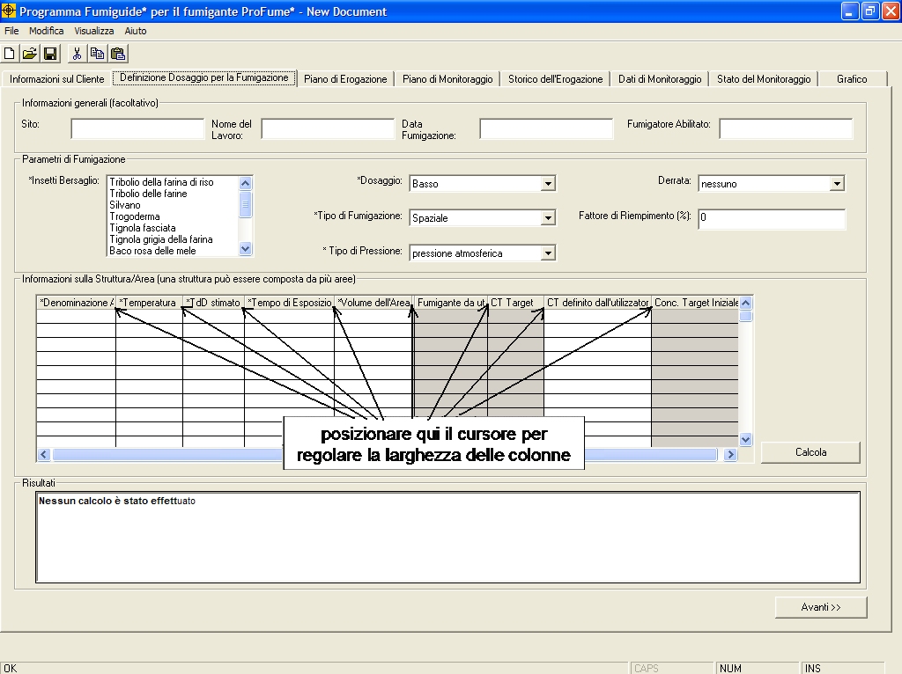
Nota: Ogni colonna di
ProFume Fumiguide può essere regolata posizionando il cursore in corrispondenza della linea grigia che separa i titoli di due colonne e procedendo ad aumentare o ridurre la larghezza della colonna stessa. Nelle aree grigie in ogni tab compaiono i risultati di calcolo mentre i campi a sfondo bianco sono riservati all’inserimento di dati o alla scelta di opzioni dagli elenchi.
Tutti i campi preceduti da un "*"
richiedono l’immissione di dati. Qui di seguito vengono illustrati i campi che richiedono un’immissione di dati al fine del calcolo del dosaggio:
*Insetti
Bersaglio: l’insetto o il gruppo di insetti obiettivo della
fumigazione. È possibile selezionare più di un insetto cliccando sui nomi del menu a tendina. Nel caso l’insetto che si desidera controllare non fosse specificato nell’elenco, selezionare dal menu "Altri Coleotteri" o "Altri Lepidotteri" in base all’ordine di appartenenza. Tutti gli insetti possono essere deselezionati cliccando nuovamente sul loro nome.
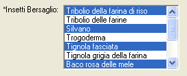
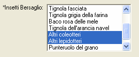
*Dosaggi: è possible impostare due dosaggi "basso" od "alto".
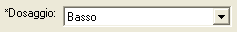
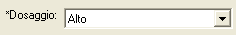
L'opzione "Stadi post-embrionali Plus" fa riferimento
al controllo di larve, pupe, stadi immaginali e parte delle uova. Tale livello base di controllo è adeguato per una fumigazione di mantenimento.
L'opzione "Tutti gli stadi vitali"
fa riferimento al controllo
di uova, larve, pupe e stadi immaginali. Tale livello elevato di controllo si addice a una fumigazione che debba liberare a fondo dagli insetti bersaglio.
Dopo aver calcolato il dosaggio per entrambi gli stadi vitali “Basso” od “Alto” , il fumigatore può suggerire al cliente un dosaggio intermedio, compreso tra lo stadio " e tutti gli staid vitali, 1500 CT, che incontri le aspettative del cliente. Questo può essere ottenuto inserendo il dosaggio desiderato nella colonna “CT definito per il cliente”.
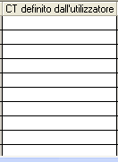
Notare che il valore del CT definito per l'utilizzatore non deve essere inferiore a 36 od eccedere 1500 CT
La Fumigazione di Precisione
consiste nell’ottimizzare l’uso del fumigante al fine di
massimizzare l’efficacia e minimizzare il rischio. La si ottiene integrando tra loro, nel piano di gestione della fumigazione, tutti quei fattori in grado di influenzare il controllo degli infestanti: biologia della specie bersaglio, temperatura, periodo di esposizione e avanzate tecniche di sigillatura.
Derrata: fa
riferimento alle derrate presenti nello spazio fumigato. Nell’elenco sono disponibili diversi tipi di derrata ma non è possibile selezionarne più di uno per lavoro.
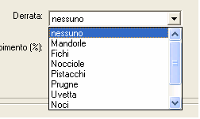
* Tipo di Fumigazione: Esistono 2 tipo di fumigazione: Spaziale o per le Derrate.
Selezionare "Spaziale" allo scopo di combattere parassiti che infestino le strutture e le attrezzature (e.g. molini, idustrie alimentari, pastifici, magazzini di stoccaggio). Selezionare "Derrata" quando si intenda controllare I parassiti su derrate alimentari (e.g. silos contenenti granaglie).
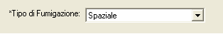
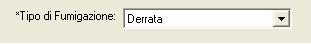
Fattore di
Riempimento: è la stima della percentuale di spazio da sottoporre a fumigazione occupata da derrate. Potete inserire qualsiasi numero intero da 0 a 100.
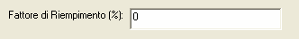
*Tipo di Pressione: ProFume Fumiguide prevede due opzioni della pressione di fumigazione: “a pressione atmosferica” e “sottovuoto”.
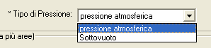
Denominazione Area: fa riferimento
all’intera struttura/edificio oppure ad una zona al suo interno. Può essere un piano, una stanza o una parte della struttura. Ogni Area presenta un certo volume, una specifica temperatura e un dato TdD stimato. In ProFume Fumiguide possono essere inserite più Aree e il programma calcolerà singoli dosaggi per area.
Struttura: un edificio a sé stante, un
magazzino, un impianto di stoccaggio, una cella di fumigazione, ecc.
Dosaggio:
definisce il numero di g-ora/m3 oppure once-ora/103p.c.
accumulati nel corso del Periodo di Esposizione. Il Dosaggio rappresenta il prodotto CT. Tra i possibili tipi di dosaggio Fumiguide prevede: Dosaggio Target, Dosaggio Pianificato e Dosaggio Raggiunto.
Dose: concentrazione/volume (g/m3
oppure once/103p.c.) di fumigante erogato nello spazio di
fumigazione - g/m3 o once/103 p.c. (vedere Concentrazione Iniziale Target).
*Temperatura: temperatura (°C o °F)
relativa al punto di infestazione nella struttura, nei macchinari o nella derrata. Nel caso di fumigazioni in cella, ProFume Fumiguide richiede l’immissione della temperatura interna delle derrate da fumigare. E’ possibile inserire qualunque temperatura purché sia compresa tra 4,44 °C e 65,56 °C (40-150°F).
*Tempo di
dimezzamento (TdD): tempo necessario affinché il 50% del fumigante inizialmente introdotto si disperda attraverso la struttura. Il TdD si misura in ore e deve essere compreso tra 1 e 1.000 ore.
*Tempo di Esposizione: tempo necessario ad
un fumigante confinato in una struttura per condurre a morte l’organismo
bersaglio. Il periodo di esposizione pianificato deve essere compreso tra 1 e
168 ore. Durante il monitoraggio delle concentrazioni di fumigante, il periodo di esposizione nei tab Definizione Dosaggio per la Fumigazione, Dati di Monitoraggio e Stato del Monitoraggio deve essere lo stesso. Si può variare il periodo di esposizione solo al fine di valutare le diverse possibilità di realizzare il lavoro. Se invece si vuole effettivamente monitorare la fumigazione in corso, i Tempi di Esposizione devo essere uguali tra loro. Nel caso si voglia procedere con Aree dai diversi periodi di esposizione, occorre aprire una seconda versione di Fumiguide ed iniziare un nuovo lavoro. E’ possibile aprire contemporaneamente più programmi Fumiguide.
*Volume
dell’Area: misura dello spazio interno espressa in unità metriche (metri cubi) o unità inglesi (piedi cubi). Il volume dell’area deve essere compreso tra 1 e 283.168,47 m3 (35-10.000.000 p.c.).
Notare nell’esempio seguente come la struttura presenti due diverse aree (Molino ed Edificio QA) caratterizzate dallo stesso Periodo di Esposizione ma da combinazioni diverse di temperatura, volume e TdD:
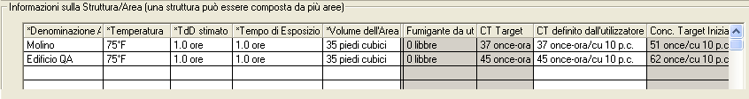
Dopo aver inserito correttamente tutti i dati richiesti occorre cliccare su "Calcola" per visualizzare dose e dosaggi per area nella sezione "Risultati".
Calcolo del Dosaggio: una volta inserite
tutte le informazioni richieste (caselle a sfondo bianco) per ogni riga della
tabella Informazioni Struttura/Area, selezionare "Calcola" per ottenere Quantità di Fumigante da utilizzare, CT Target e Concentrazione Iniziale Target relativi a quell’Area. I risultati complessivi relativi all’intera struttura appariranno invece nella sezione Risultati.
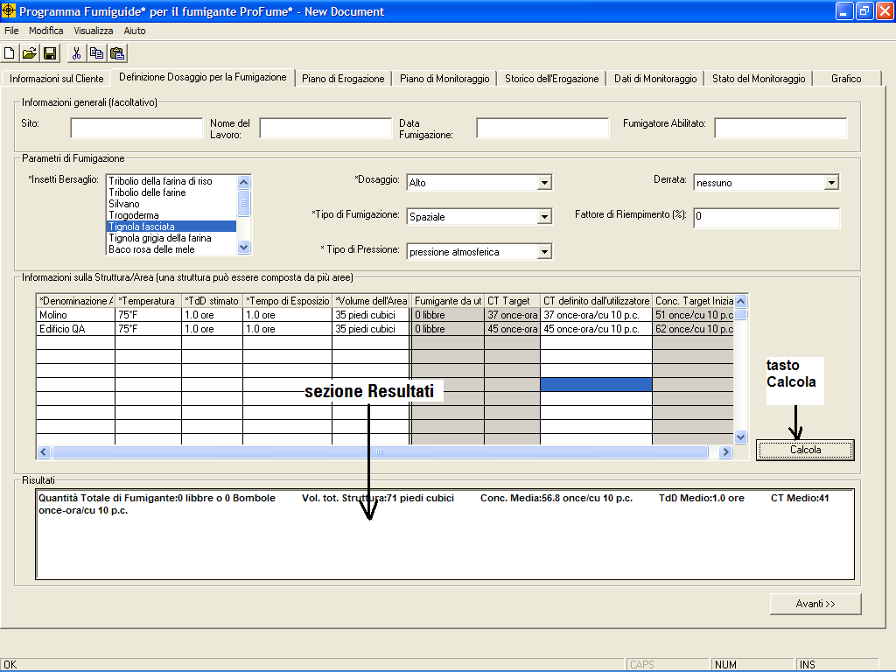
Messaggi
di avvertimento associati al Tab Definizione Dosaggio per la Fumigazione
Ogni volta che
si inserisce un dato al di fuori dei valori consenti prima descritti, appare una finestra con un messaggio di avvertimento di questo tipo:
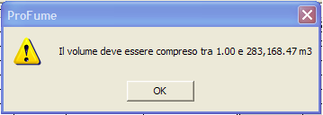
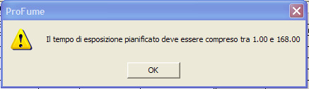
Esempi di
avvertimenti generali del Tab Definizione Dosaggio
per la fumigazione sono invece riportati qui di seguito:
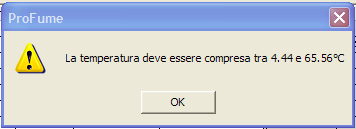
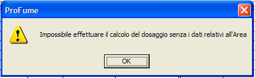
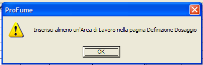
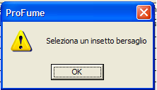
Qualora
venga inserito un dato rientrante tra i valori consentiti ma comportante un
livello di controllo degli infestanti non ottimale, ProFume Fumiguide lancia un
messaggio di avvertimento in rosso nella sezione Risultati. In più, l’intera
riga del calcolo del dosaggio per l’Area interessata viene conseguentemente
evidenziato mediante sfondo rosso.
Messaggio di avvertimento nel caso
la temperatura inserita comporti un dosaggio al di fuori dei valori consentiti:
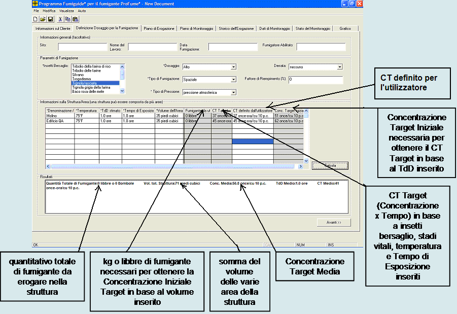